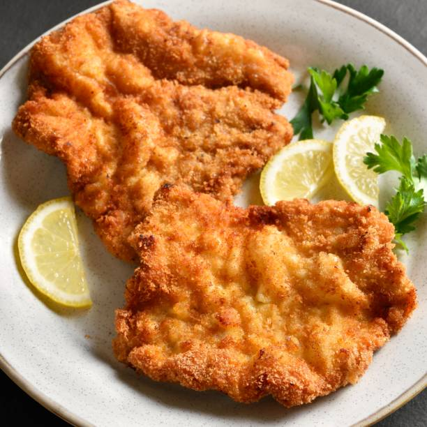

La milanesa es un plato típico de la cocina italiana que se prepara principalmente con ternera o pollo. hoy vamos a preparar una milanesa de carne, para mi, mucho más rica.
Comenzamos limpiando los filetes de grasa. En este caso usé filetes de pollo de contramuslo que al llevar algo más de grasa, saldrán más jugosos.
Batimos el huevo en un plato hondo, ponemos un poco de perejil y sal e introducimos los filetes en el huevo batido previamente salpimentados. Tapamos y dejamos macerar en la nevera una hora.
Pasado ese tiempo los pasamos por pan rallado mezclado con ajo en polvo. Este truco le da un aroma a ajo espectacular.
Seguidamente los freímos en abundante aceite de oliva caliente unos 45 segundos por cada lado y listo. Servimos con patatas fritas! Un plato delicioso y fácil de preparar.